Grâce au dépouillement analytique et à la création d'une base de données "On pourra établir à volonté en quelques minutes la liste :
etc..." (Szambien et Boudon, 1990: 10)
Boudon, Françoise, et Werner Szambien. 1990. « Les rapports présentés au Conseil des Bâtiments Civils, 1795-1845. Constitution d’une base de données ». Research Report 676/90. Ministère de l’équipement, du logement, des transports et de la mer / Bureau de la recherche architecturale (BRA) ; Université de Paris IV / Centre de recherche sur l’histoire de l’architecture moderne. https://hal.archives-ouvertes.fr/hal-01909887.
Travail effectué par Lena Krause dans le cadre de son mémoire de maîtrise...
test effectué dans l'interface de l'INHA: dénomination = "dépôt de mendicité" + rapport contient "Napoléon".
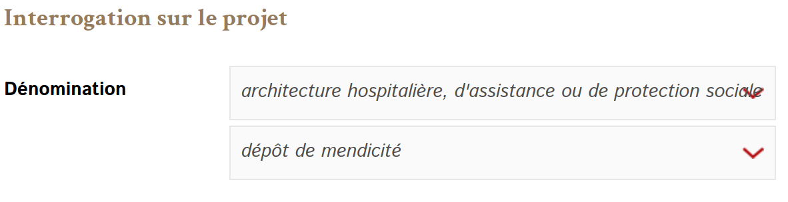 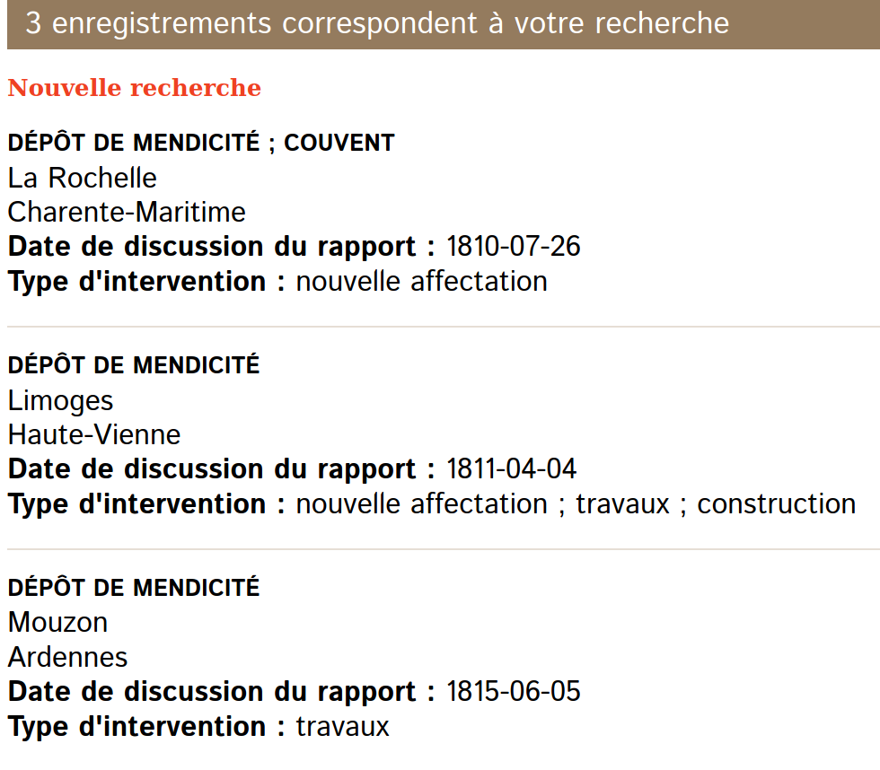Nous faisons face au problème suivant: comment définir qu'un édifice est "commandé par Napoléon"? Les résultats sont des fiches qui font référence au code Napoléon (qui est disponible en ligne sur Gallica, nous sommes donc allée chercher les références au code).
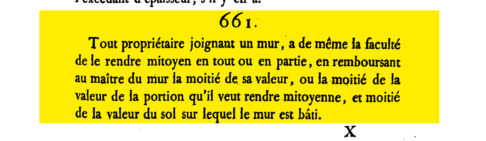 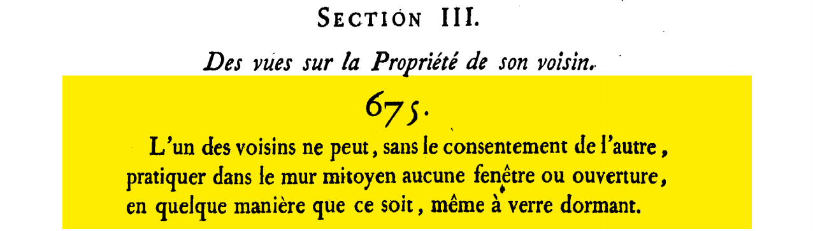 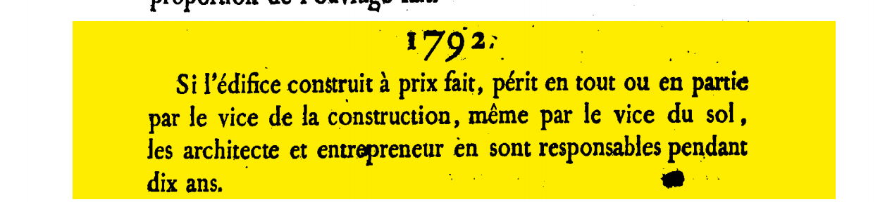 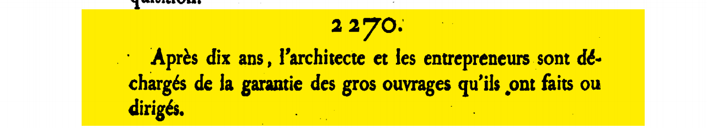Ne pas chercher dans le rapport mais dans les personnes mentionnées. Champs:
N'y parvenant pas avec l'interface actuelle, nous avons écrit un script qui filtre la base de données pour nous croiser les résultats des "dépôts de mendicité" avec les mentions de "Napoléon 1er". Nous avons constaté qu'il n'existe aucun dépôt de mendicité dont la délibération fait mention de Napoléon. Nous avons donc écrit un code pour afficher les 30 délibérations qui font mention de Napoléon.
Ce sont majoritairement des édifices et monuments commémoratifs. Si ce micro-corpus inspire bien des questions (la chronologie mériterait par exemple un approfondissement), nous n'avons pas su résoudre la question de recherche initial. Nous pouvons exclure les corrélations entre "Napoléon" et les dépôts de mendicités. Il reste alors à savoir s'il faudrait plutôt chercher du côté d'une loi ou directive de Napoléon, ou encore trouver une méthode pour étudier les 262 délibérations à propos de dépôts de mendicités.
Pour répondre à cette question, nous travaillons avec deux types d'édifice "église" et "école", en ajoutant un type d'intervention nommé "nouvelle affectation", entre 1802 et 1810 dans le département de Nièvre. Le choix du type d'édifice ne devrait pas affecter le résultat, car en cas d'attribution multiple, les deux (ou plus) types architecturaux devraient être renseignés.
Cette question est typique à résoudre dans le contexte d'une base de données, que l'on interroge au moyen du langage SQL. N'ayant pas accès à la base de données dans son format original, la proposition ci-jointe est une approximation de la requête à effectuer, basée sur la documentation que nous avons réunie.
Dans l'interface de l'INHA, nous pouvons sélectionner un seul type d'édifice à la fois, et il n'est pas possible de définir une fourchette pour les dates des rapports.
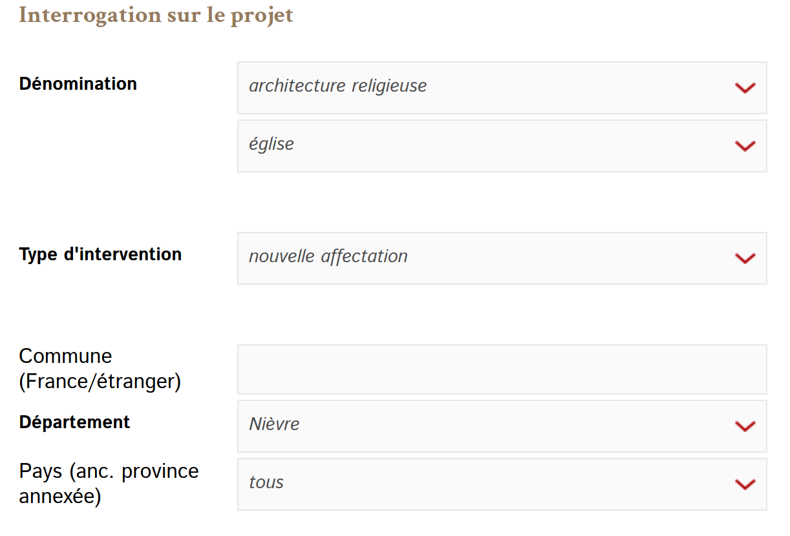 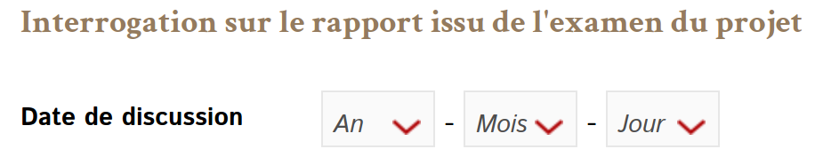Pour mettre en pratique la question, nous avons écrit un script qui teste le nombre de délibérations durant la période concernée, dans le département de Nièvre, de type école ou église, et identifiée comme une nouvelle affectation.
Ce type de requête, typique pour une base de données car on croise plsieurs critères, est parfois trop précis. À l'image de la recherche d'une aiguille dans une botte de foin, si l'on n'a pas d'hypothèses préalable, il est probable de n'obtenir aucun résultat.
Il n'existe aucune délibération qui réponde à tous les criètres définis dans la question de recherche. Nous pouvons toutefois nous intéresser aux 11 nouvelles affectations dans le Nièvre.
Nous pouvons voir dans les délibérations que les affaires concernant une nouvelle affectation sont identifiées avec les anciens et nouveaux types d'édifice. La prépondérance de l’architecture religieuse s’explique quant à elle par le grand nombre de réaffectations de bâtiments nationaux en écoles, préfectures et tribunaux, notamment (Woolf, 1987: 30-31).
Cette question de recherche avait problement pour but de donner un exemple pour démonter des riches possibilités de croiser les requêtes. Pour obtenir un résultat, et donc un corpus, dit "pertinent", il faut cependant faire plusieurs essais (et erreurs - non pas erreur mais plutôt apprentissage, rôle informatif utile et nécessaire). Nous pensons que cela fonctionnerait très bien pour des chercheur·se·s spécialisé·e·s qui arriveraient pour consulter la base de données avec des intérêts déterminés, il·elle·s pourraient ainsi éliminer ou creuser des pistes grâce à cette "vérification".
D'emblée, nous pouvons rechercher les rapports confiés à Chalgrin.
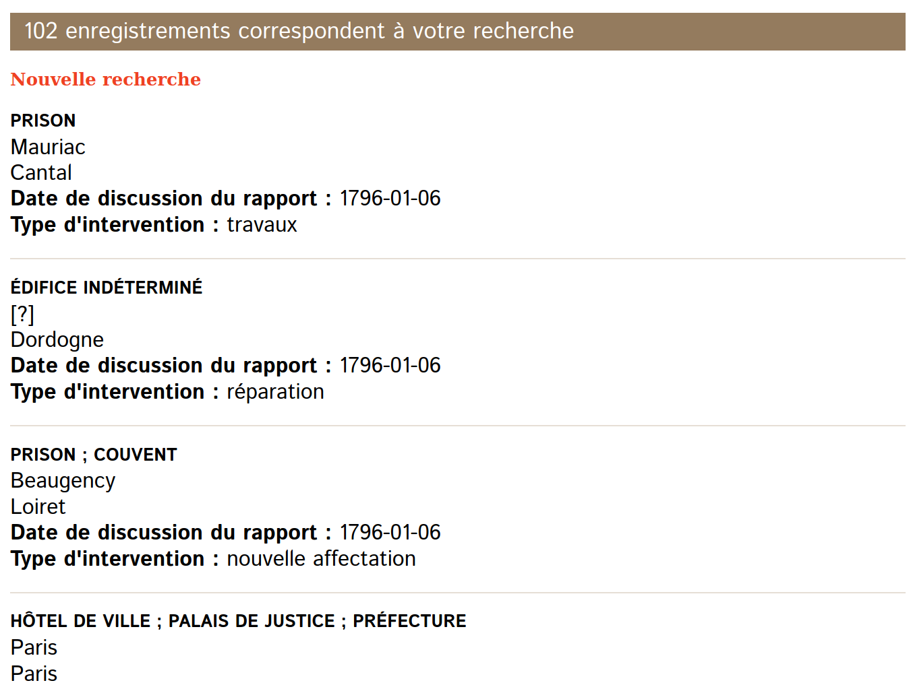Il nous faut toutefois définir la date qui correspond à son retour au pouvoir sous le Directoire pour répondre à la question. Nous avons cependant choisi de commencer par la voie exploratoire, c'est-à-dire de suivre les pistes présentes dans les données, avant d'identifier la date en consultant la littérature existantes et les spécialistes (en l'occurence, Emmanuel Château-Dutier).
Nous avons donc commencé par écrire un script qui identifie les délibérations où Chalgrin est identifié comme auteur du rapport.
Étrangement, nous arrivons à un résultat de 104 délibérations (pour 102 dans l'interface de l'INHA). Nous ne savons pas expliquer cette différence (ortho-typo?).
Nous pouvons étudier ces résultats en les regroupant par année:
Nous pouvons ici identifier que Chalgrin était très actif - 43 rapports, dont 42 en son nom - en 1796, et qu'il a également 21 rapports donc 15 en son nom et 6 rapports cosignés en 1797. Dès 1798, il n'est plus très actif en tant que rapporteur (on pourrait toujours vérifier ce qui en est dans les mentions, voir si la tendance s'inverse par exemple). En 1810, il est impliqué dans 14 rapports cosignés à plusieurs. Les délibérations où un grand nombre de rapporteurs (ou de lieux, ou d'affaires) sont généralement des affaires administratives.
De ces observations, nous pensons que la question de recherche (son retour au pouvoir sous le directoire), concerne les années 1796 et 1797. À suivre.
Identifier les délibérations en Aveyron dont Boissonnade est l'architecte semble plutôt évident. Nous nous attarderons à la question du nombre et de la nature dans un second temps.
Il est à nouveau relativement aisé de répondre à la première partie de la question par une requête SQL:
Ce qui est surprenant, c'est qu'il aurait dû être aisé de faire une requête de base (délibérations en Aveyron avec Boissonnade comme architecte) dans l'interface de l'INHA. Nous n'avons toutefois pas obtenu de résultat (problème dans la requête?).
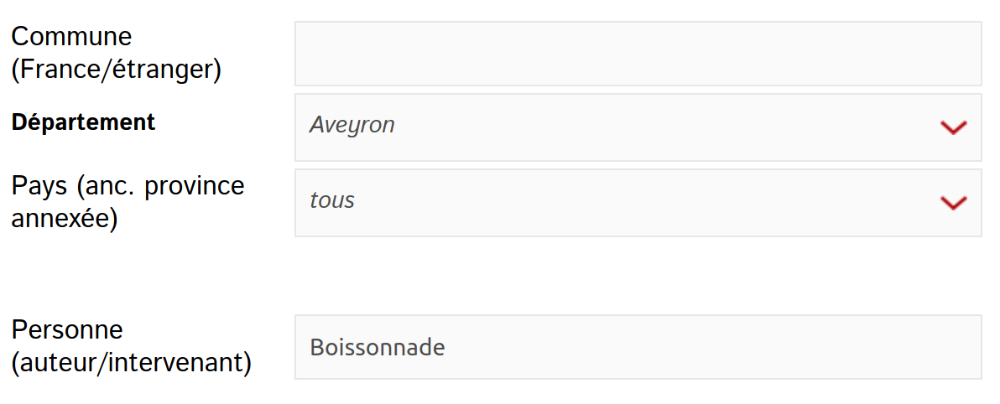Il existe pourtant plusieurs délibérations en Averyon où Boissonnade est identifié comme architecte:
Pendant les vérifications de notre script (notamment par un simple ctrl+f dans le fichier "conbavil.json"), nous avons découvert Boissonnade écrit "Boissonade" (nous avons probablement découvert l'erreur en la faisant nous-même). Également identifié comme architecte, nous pensons qu'il s'agit de la même personne et donc d'une erreur typographique. Sous cette orthographe, nous avons trouvé trois résultats dans l'interface de l'INHA:
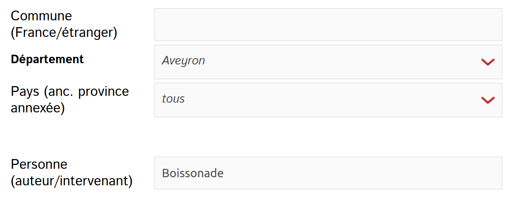 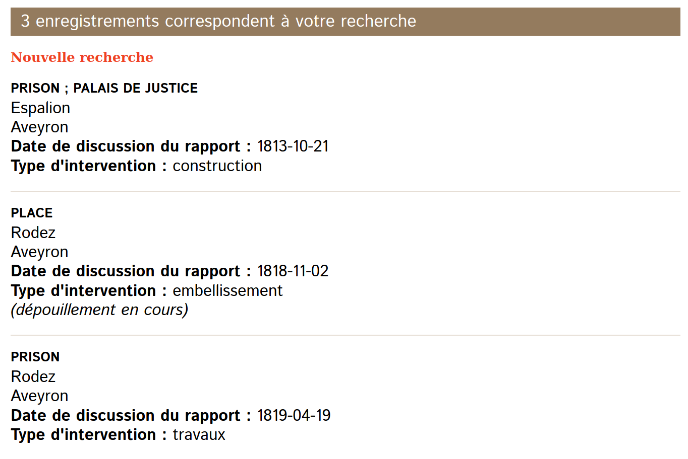Nous pouvons donc ajuster notre script pour vérifier les délibérations avec les deux orthographes (ce qui ajoute 5 occurences, 3 comme architecte en Aveyron et deux comme intervenant (non-architecte) ailleurs).
Durant les tests de notre script, nous avons également trouvé des délibérations où Boissonnade n'était pas la seule personne mentionnée. Cela est dû à la structure du logiciel TEXTO. Les bases de données telles qu'employées aujourd'hui sont généralement composée de plusieurs tables. Chaque table modélise un élément de l'univers représenté. Dans CONBAVIL, il y aurait notamment des délibérations (ou fiche), des personnes, des lieux etc. On pourrait même modéliser les pages des archives. On relie ensuite les tables via une "table de liens": si une fiche fait mention de l'architecte Boissonnade, dans la table des liens entre les fiches et les personnes, on trouvera l'identifiant de la fiche, et l'identifiant de Boissonnade. Toutefois, il y a 30 ans, les possibilités n'étaient pas les mêmes. TEXTO était un logiciel pour des bases de données dites "à plat", qui contiennent une seule table. On était donc limité à plusieurs niveaux:
Nous avons dû garder en tête cette ancienne structure pour identifier les mentions de l'architecte Boissonnade. En effet, il ne suffit pas de chercher les personnes dont le nom est Boissonnade: persName == "Boissonnade". Il faut également chercher les noms qui contiennent Boissonnade : persName.includes("Boissonnade"). Prenant aussi en compte l'erreur typographique, il faut accepter, dans les deux cas, les orthographes "Boissonnade" et "Boissonade".
**Personne(s) identifiée(s)** (https://www.inha.fr/conbavil/notice.php?pv=8661) Boissonnade, Jean Joseph (1744-03-17 - 1818-03-30) **Commentaires :** F14/2173/2, chemise Boissonnade, pièces 1-61 né à Saint-Geniez d'Olt (Aveyron). 1761, cours de dessin et de maths. à Avignon, 1765, ingénieur des T. P. du Gévaudan ; 1790, ingénieur en chef de la Lozère (doc. 3) ; une note du préfet, 02-1807 : 'le rapport de Boissonnade pour 1806 est pitoyable, confus, embrouillé, peu français, vague, incomplet, sans orthographe' (doc. 4 et 5) ; retraite : 1811 (doc. 23) **Sources :** Arch. nat. F14/2173/2 **Personne(s) identifiée(s)** (https://www.inha.fr/conbavil/notice.php?pv=19407) Boissonnade, Etienne Joseph (1796 - 1862) **Commentaires :** D'après le 'Répertoire.." architecte du département de l'Aveyron à partir de 1821 ; chargé des édifices diocésains de Rodez à partir de 1823. **Sources :** R. Taussat, 'Etienne Boissonnade, 1796-1862, un Haussmann aveyronnais', 'Etudes aveyronnaises', 1996, p. 159-172. Répertoire des architectes diocésains du XIXe siècle.
Il s'agit maintenant de trouver le nombre et la nature de ces interventions. Au-delà d'une liste comme réponse, on entre dans une véritable logique quantitative. Cela est possible avec des requêtes SQL un peu plus complexes. Cependant, afin de pousuivre par la pratique, nous allons plutôt étendre notre script. Nous interprétons le terme "nature" des inteventions comme équivalent du champs "type d'intervention".
S'il nous apparaissait simple de répondre à cette question, nous avons ici fait face à plusieurs défis dus à la structure de la base de données. Avec un peu de travail de "nettoyage" des données, il est cependant possible d'avoir une réponse relativement représentative (il se peut que nous ayions manqué d'autres erreurs typographique par exemple).
Cette question, avec l'indication des pourcentage, demande clairement une approche quantitative. Cela est possible en SQL, cependant, c'est un type de requête plus complexe qui demande des connaissances avancées. Dans l'interface de l'INHA, on ferait face à plusieurs difficultés:
Si l'approche quantitative était visée dès la création de la base de données, l'interface actuelle ne la facilite pas (elle permet la consultation du contenu, par fiche "individuelle").
Puisque notre travail consiste justement à revoir l'utilisation de la base de données en créant des visualisations, nous allons le faire pour cette question. Commençons par chercher des visualisations qui pourrait bien répondre à cette question. On classifierait les affaires en trois catégories: construction, réparation et autre pour tout le reste. Si le "camembert" ou pie chart s'y applique car un pourcentage représente la partie d'un tout, cela vaut la peine d'explorer les possibilités offertes par d3.js. La page Observablehq déborde d'exemples dont le code est visibile et donc réutilisable. En voici quelque-uns documentés par Mike Bostock, créateur de la librairie D3.js:
Lien vers la sourceIl est bon de commencer par savoir "où on s'en va", pour préparer les données dans le format requis par la visualisation. Il faut également penser aux façon de regouper les délibérations: on veut des tranches de 10ans. Puisque nous créons des visualistions interactives, nous pouvons laisser le choix des années étudiées à l'utilisateur·rice. Dans ce cas, nous devons:
Grâce à l'interactivité, nous pouvons voir les tendances évoluer à travers le temps. Nous observons notamment qu'il y a plus de réparations que de constructions au début de la période étudiée (1795-1805: 5% construction, 12% réparation ), et que cette tendance s'inverse (1810-1820: 17% construction pour 12% de réparation, puis 1830-1840: 23% de construction pour 4% de réparation)
Il serait probablement intéressant de savoir ce qui se range dans "autre", d'autantplus que les constructions et réparations ne représentent que 17% des interventions entre 1795 et 1840, ce qui nous permet de faire l'hypothèse que d'autres interventions étaient primaires (en fait, nous savons qu'il y a beaucoup de nouvelles affectations.